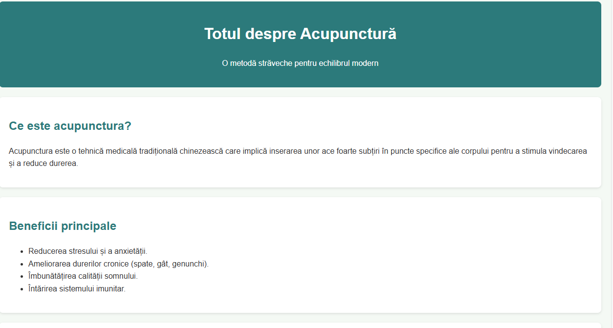

Acupunctura este o componentă cheie a medicinei tradiționale chineze, utilizată de mii de ani pentru a echilibra fluxul de energie (Qi) în corp prin inserarea unor ace extrem de fine în puncte strategice.
Imaginea de mai jos reprezintă confirmarea vizualizării paginii în browser:
